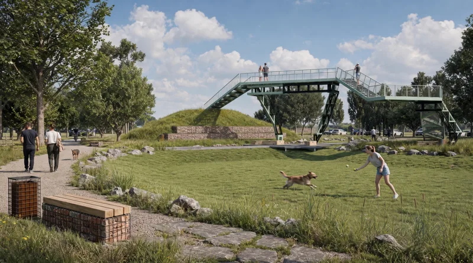
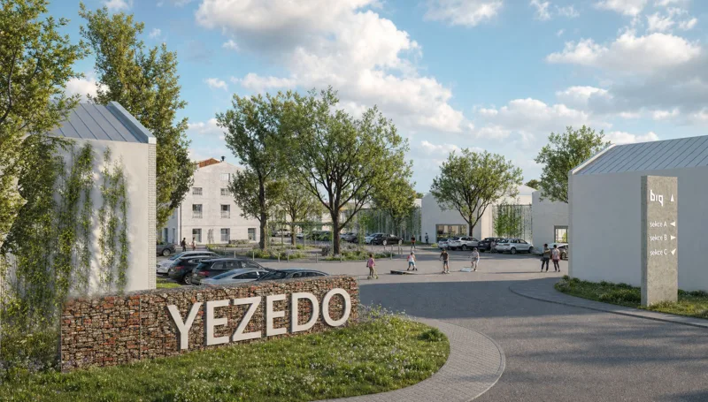
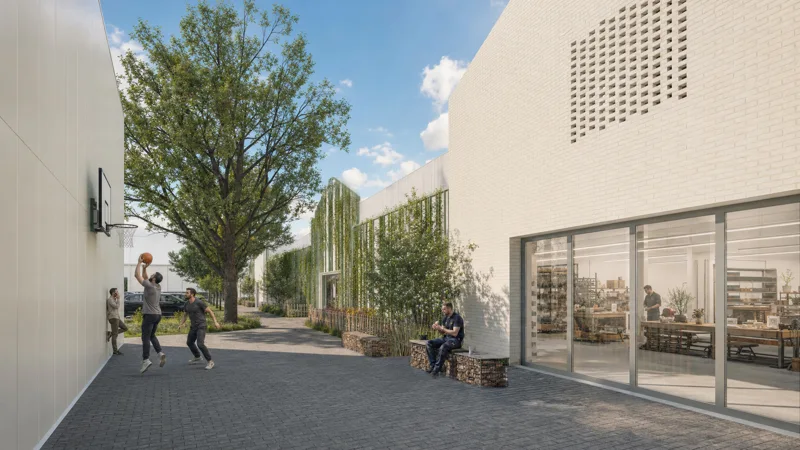
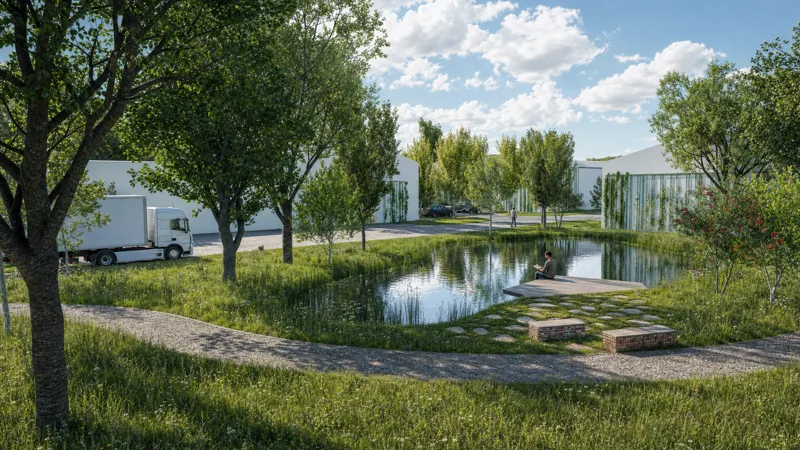
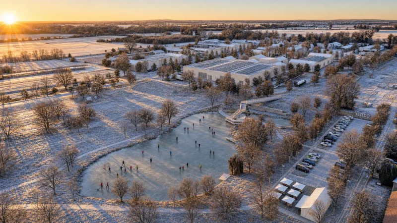
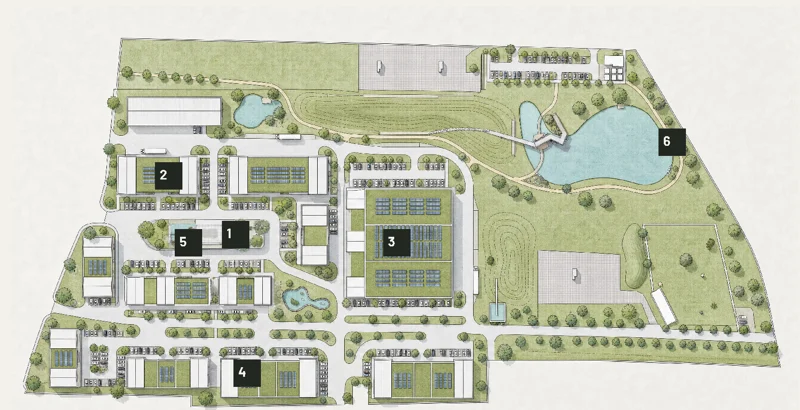
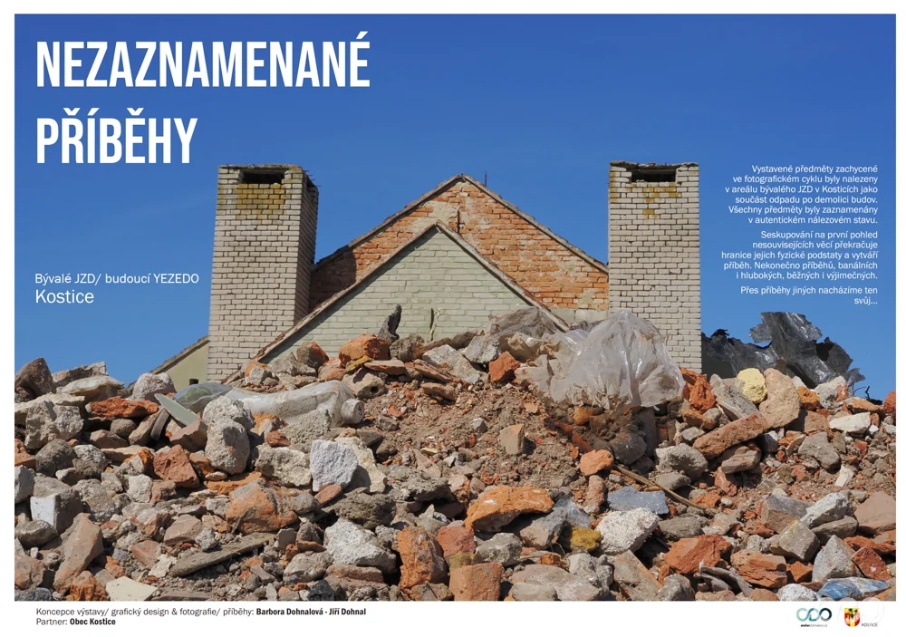
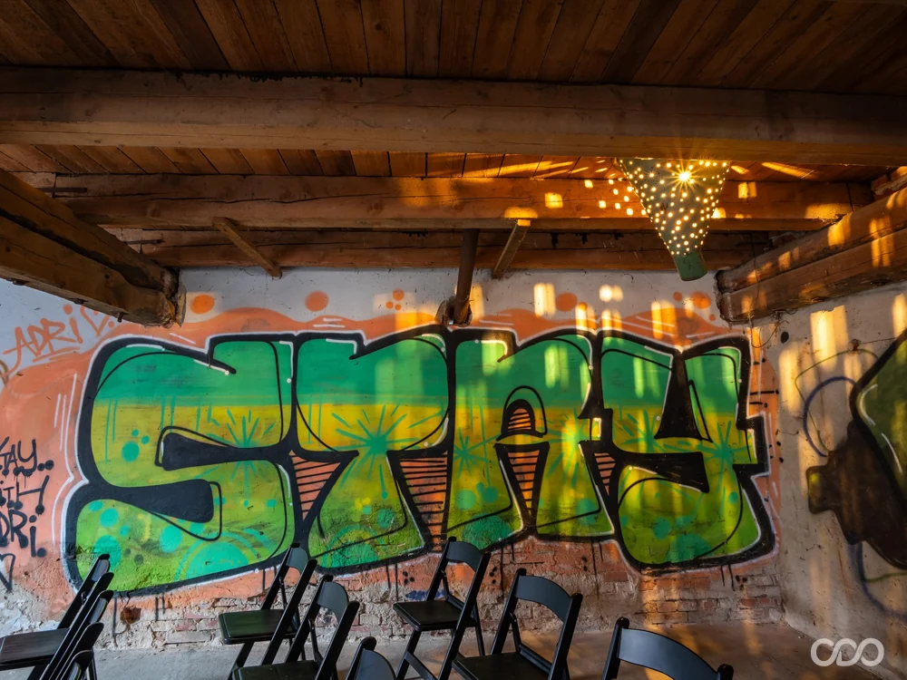
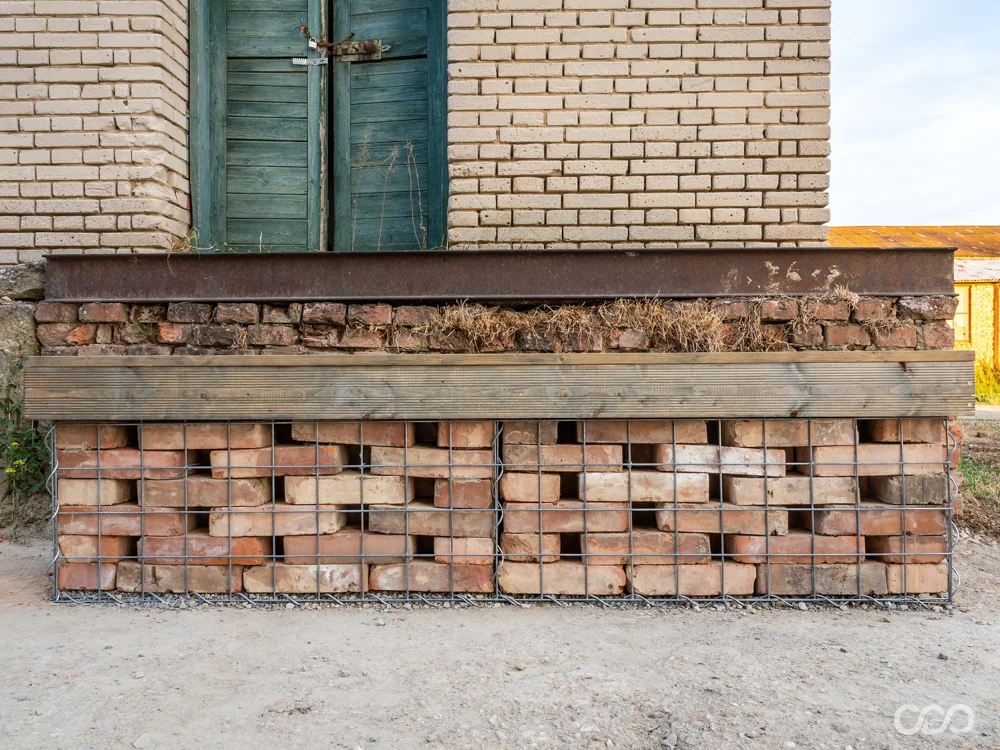

Práce blízko domova
Nové firmy znamenají práci přímo v Kosticích. Méně dojíždění, víc času doma.

Bývalé družstvo za obcí se mění. Vznikne tu park s vodou, místo na procházky, kavárna v sýpce a nové haly pro menší firmy. Tady najdete, co to znamená pro vás.
S vodou, stromy, lavičkami a vyhlídkou na Pálavu.
Pěšky i na kole. Nové cesty propojí obec, areál a okolní krajinu.
Bude v ní kavárna, dílny a sál pro akce. Je to jediná stará budova, která se nezbourá.
Územní plán tu počítá jen s lehkou výrobou a službami.
Auta i nákladní doprava budou do areálu jezdit jen novým vjezdem.
Prostory pro živnostníky a menší firmy, k pronájmu i ke koupi, až budou haly postavené.
Prohlédnout halyBílá sýpka z roku 1955 je dominanta celého areálu. Nezbourá se, ale dostane nový život.


Nový areál nebude jen pro firmy. Velká část je navržená jako veřejný prostor pro lidi z Kostic.

Největší nádrž na dešťovou vodu bude většinu roku suchým parkem přímo u domů. Z vyhlídky uvidíte až na Pálavu.

Stín velkých stromů a lavičky z cihel ze starého družstva.

V přízemí kavárna a dílny, nahoře sál na přednášky a výstavy.

Koš na basketbal i tichá zákoutí v zeleni.

Místo betonu stromy, vodní plochy a cesty. Zeleň v létě ochladí okolí.

Park a cesty slouží na procházky po celý rok.
Obrázky jsou vizualizace. Ukazují, jak by to mělo vypadat, až bude hotovo.
Areál je navržený tak, aby se jím dalo projít z obce do krajiny. Auta, chodci i cyklisté sdílejí jeden veřejný prostor.
Kavárna, lavičky ve stínu stromů a místo na akce.
Posezení a zeleň mezi sýpkou a halami.
Největší zelená plocha přímo u domů, s vyhlídkou na Pálavu.

Obec postavila cesty, vodovod, kanalizaci, osvětlení a elektřinu. Pomohla dotace ministerstva.
Architekti dokončili návrh celého areálu i proměny sýpky. Pořádají se první výstavy a akce.
Stavební povolení pro sýpku a prvních šest hal.
Začne stavba: nejdřív sýpka a první haly.
Nové firmy znamenají práci přímo v Kosticích. Méně dojíždění, víc času doma.
Dešťová voda z areálu nebude odtékat pryč. Vsákne se, ochladí okolí a v suchu poslouží na zálivku.
Obec připravuje komunitní energetickou síť KES Kostice, aby se využívaly místní zdroje a energie se zbytečně neztrácela.
Doplní obec Jak se příjmy ze zóny promítnou do poplatku za odpad: o kolik a od kdy.
Ještě se nestaví, ale sýpka už žije. Přijďte se podívat při další akci.

28. 8. 2026
Fotografie a předměty z bývalého JZD. Vernisáž poprvé otevřela sýpku veřejnosti.

5. 9. 2026
Návrh areálu a proměny sýpky si lidé mohli prohlédnout i při Dni obce Kostice.

24. 8. 2026
Před sýpkou vznikla první lavička z materiálu, který zůstal v areálu.
Cesty, vodovod, kanalizace, osvětlení a elektřina jsou už hotové (2026). Stavební povolení se čeká do konce roku 2027 a stavět se má začít v roce 2028. Nejdřív přijde na řadu sýpka a prvních šest hal.
Doplní obec Zůstane v provozu? Kde bude a v jakých hodinách?
Doplní obec Kudy pojedou auta při stavbě a potom při provozu, kdy se bude stavět a jaká omezení čekat.
Tak se s tím počítá. Náměstíčko, park a cesty jsou navržené jako veřejný prostor pro lidi z obce, ne jen pro zaměstnance firem.
Územní plán tu počítá jen s lehkou výrobou, tedy s menšími provozy, dílnami, technologiemi a službami. Těžký průmysl sem nepatří.
Obec už vybudovala cesty a sítě s podporou dotace Ministerstva průmyslu a obchodu. Na stavbu hal hledá strategického partnera, se kterým projekt dokončí.
Ano, při akcích. V sýpce už proběhly výstavy Nezaznamenané příběhy a Nový dech. O dalších akcích píšeme v Aktualitách.

Zeptejte se přímo starosty obce. Zavolejte, napište e-mail, nebo pošlete dotaz přes formulář.
Libor Balgastarosta obce Kostice
+420 725 111 277 · starosta@kostice.cz